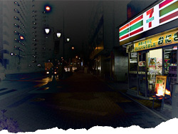

 image: J. Gray“I wince, more than her.”
Light turns green, I roll across the intersection. Walking along the sidewalk in front of me, a fashionable young woman. Burgundy crushed velvet skirt over other layers, black leather boots, vintage coat, long straight black hair. Goth-ish. Can’t see her face.
Walking with purpose. Confident strides, but not exactly in a hurry. Forget ogling. She’s on some kind of mission. Not going into that 7-11, like I am.
I glance at her face as I roll in front of her. Her eyes and skin are slightly reddened. Her lip ring twitches. Distant eyes. Drugs?
I park my bicyclette at the combini.[1] Another glance. She tugs at something on her wrist. Is she trying to yank a thread from the pouch in her hand? Is the thread imaginary? Her face twitches again. That jerky hand motion…
She passes behind me. I turn to watch her walk away. She’s not pulling.
She’s cutting. Slashing.
One of those cheap pink plastic-handled straight razors that Japanese women use to shave their armpits. At least twenty gashes down the pale underside of her left forearm. Some are like cat scratches, others are deep slits. Blood oozes.
Suddenly the blade is the only focused object in my field of vision. It sniks across her wrist again. I wince, more than her.
She walks and slashes. People go in and out of the combini, cross crosswalks. She beelines straight through. Nobody notices her, she notices nobody.
I look around for the omawari-san.[2] At night there’s usually at least one rookie on their mountain bike stationed at the big junction. Not tonight.
I watch her continue down the sidewalk, alone, small. Her right arm jerks with each slice as big transport trucks rumble past.
referenced works
- Convenience store. ↩
- Policeman. Often found patrolling empty streets on their bicycles. Known to harass loiterers and baffled foreigners on occasion - by asking to see their "alien cards"; maybe because there's a lack of real civil disturbance to resolve (Tokyo is said to be perhaps the safest large city in the world, something particularly noticeable at night). Maybe they would be better off tending more to the locals. ↩
location information
- Name: the 7-11 at the intersection of Mejiro-dori and Senkawa-dori
- Address: 東京都練馬区練馬3-1-10
- Time of story: late night
- Latitude: 35.737138
- Longitude: 139.650017
- Map: Google Maps
033 “Dewy eyes closed, her porcelain arms and legs splayed attractively”
032 “The ika had made too many turns.”
031 “A tongue was moving around my big toe, like a warm slug crawling. ”
030 “Ichor will gush out of this carefully constructed image”
029 “I wince, more than her.”
028 “Their schoolbags were puddled around their socks, forgotten”
027 “Amongst the bottles and the obscure records and the crimson velvet walls”
026 “Nostalgia isn’t an easy indulgence for amateurs”
025 “... but anyway please take one of these little cheese cakes ...”
024 “The inhabitants of the blue, makeshift tents in the bushes.”
023 “Yeah … I’m sorry too. Merry Christmas.”
022 “I was dead broke. It was winter.”
021 “The district's energy had faded to rest on my last night there.”
020 “The slightly bald salaryman didn't correspond to any memory I could conjure up.”
019 “She laughed at my effort and responded in English, ‘Long time, no seduction.’ ”
018 “In my dreamy state, oblivious to signs and announcements I often boarded the wrong train.”
017 “I was fifteen years old and it was one of those nights.”
016 “That ear of corn just wanted to go home”
015 “With his painstakingly coiffured mane blowing in the wind”
014 “Her voice, even across languages, betraying her worry.”
013 “I saw them drawing bamboo sticks from a silver rectangular box.”
012 “A simulacrum of someone else's home, equal parts comfort and loss.”
011 “Jumbled Escheresque insanity where geography in any traditional sense ceases to exist.”
010 “I could hardly make out anything apart from his glowing eyes...”
009 “Shibuya was like a stroke.”
008 “I cried for a while and wiped the dead bracken off my karate pants.”
007 “Both my tie and my disposition hang limp as I calculate the remaining distance to the station.”
006 “I once read about a Chinese maiden whose feet were unbound by a cruel man …”
005 “The Bad Girl strutted off and I was left with a ham egg pie.”
004 “I arrived expecting an irritated Japanese person to step out of the crowd and identify himself as Hideki.”
003 “The woman at the ticket window seemed surprised to see another human being. I was the only visitor.”
002 “Flanked on either side by adult manga shops and the like, the smell of yakitori in the air.”
001 “For two weeks the day began with this morning walk, our shared routine.”

Write for Us!
We’re looking for short narratives describing pivotal moments of elation, confusion, absurdity, love or grief — or anything in between — inseparably tied to a specific place in Tokyo or New York.
commentary
But allow me to post the second half here in the comments:
…
I watch her continue down the sidewalk, alone, small. Her right arm jerks with each slice as big transport trucks rumble past.
Whatever happened, baby, it’s not that bad, I swear.
I do the only thing I can do – enter the combini to buy what I came to buy. Which was what? I scan aisles. You sell gauze?
I exit and look down the road. She’s gone. I eat my ice cream. My taste buds have shut down.
Stand there, or get on your bike and look for her?
I roll. I scope doorways and lobbies. Turning my head so much makes me dizzy.
She could be in any one of thousands of concrete compartments, bleeding.
Stupid thoughts. When you get home from mutilating yourself, do you still take your shoes off?
I pass under the train tracks. Check back streets, houses. Peep windows.
The most dilapidated, weed-infested playground in the world. Wouldn’t be in there. She’s not that depressed.
I stop pedaling and just coast.
I give up. She’s gone.
I imagine seeing her again, in the daytime. The wounds have healed and she’s smiling.
See, it wasn’t that bad.